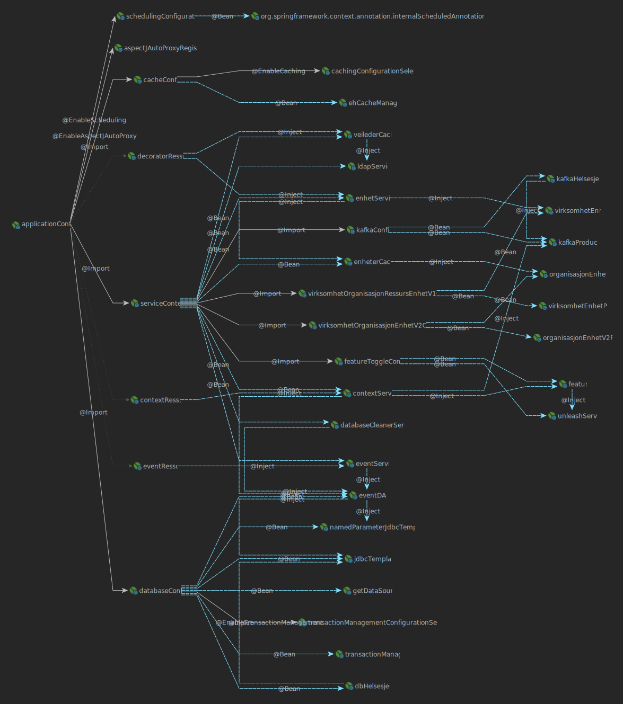

class: front-page # Dependency Injection --- class: agenda # Agenda * Intro * Del 1 - Basics * Del 2 - Pakk det sammen * Del 3 - Features * Del 4 - Enda flere features ??? ### Intro * Rask intro til **Dependency Injection**. * Kode-eksempler ### Del 1 - Basics * Grunnleggende byggesteiner ### Del 2 - Pakk det sammen * **Del 1** har masse forenklinger * Pakke inn i fin pakke ### Del 3 - Features * Finn klasser med `stereotype`-annotasjoner * @Named og navngivning av beans ### Del 4 - Enda flere features * Bean-methods med avhengigheter * ConstructorInjection * AOP --- class: center middle # Intro ??? Vi kommer til ta inspirasjon fra Spring DI, men dette er ikke en intro til Spring. --- # Intro - Problemet Eksempel på oppsett i en webapp: ```java new MeldingController( new MeldingService( new MeldingDAO(dbConnection), new LoggDAO(dbConnection) ), new OppgaveService( new OppgaveDAO(dbConnection), new LoggDAO(dbConnection) ) ); ``` ??? ### Problemet - Relativt normalt oppsett - Alt sendes inn via konstruktøren - Mye boilerplate (plumbing) **NB**: Alle som skal ha en **MeldingController** må forholde seg til alle avhengighetene også. --- # Intro - DI-løsningen Eksempel på oppsett med DI: ```java DIY.getBean("meldingController"); ``` ??? Så enkelt. **MEEEEN...** --- class: cols two # Intro - DI-løsningen Eksempel på oppsett med DI: ```java DIY.getBean("meldingController"); ``` Men det skjer jo litt bakom da; .col[ ```java @Bean public meldingController() { new MeldingController(); } @Bean public meldingService() { new MeldingService(); } @Bean public oppgaveService() { new OppgaveService(); } ``` ] .col[ ```java public class MeldingController { @Inject private MeldingService meldingService; @Inject private OppgaveService oppgaveService; public List<Melding> hentAlle() { // TODO } } ``` ] ??? Det er såklart boilerplate ved bruk av DI også. Her bruker vi en nokså verbos variant der alle beans defineres eksplisitt, men vha f.eks springs Sterotype-annotasjoner (@Component, @Service, @Repository etc) og classpath-scanning så kan man minimere dette også. **Inversion of Control** (IoC), vi har snudd program-flyten fra å sende inn argumenter, til å få modulene våre til å etterspørre de selv. --- class: cols three # Intro - Hva .col[ <img src="images/naive.gif" class="img"/> ] .col[ <div class="arrow-wrapper"> <div class="arrow-right"></div> </div> ] .col[ <img src="images/injector.gif" class="img"/> ] <div class="credits"> https://martinfowler.com/articles/injection.html </div> ??? Overordnet kan man se på det slik; - Gått fra direkte instansiering, til at vi bruker ett sentralt "REPO" (Assembler på tegningen) for å lagre unna alle avhengighetene våre --- # Intro - Hvorfor  ??? Avhengighets-graf fra en bitte-liten app hos NAV. En vesentlig større applikasjon, vil ofte være mye mer komplisert. **Hva oppnår vi med DI?** * Flytter ansvar "inn i klassen", fremfor å måtte sende inn alt via konstruktøren * En klasse etterspørr sine avhengigheter fra ett felles sted * På den måten, blir det letter å ta ibruk en klasse i applikasjonen Det finnes i all hovedsak to løsninger på hvordan dette kan løses; * runtime, f.eks [Spring](https://spring.io/), pico, guice * compiletime f.eks [Dagger](https://github.com/google/dagger) Det vi kommer til å titte nærmere på er runtime-variant. <br /><br /><br /> **NB** **NB** **NB** I denne micro-service verden så kan vi sannsynligvis greie oss uten DI siden appene er så små. Og det er såklart overhead, teknisk og kognitivt ved bruk av DI. --- class: center middle # Del 1 - Basics --- # Del 1 - Basics * Oppgave 1.1: `@Bean` * Oppgave 1.2.1: `DIYStatic.scan(String classpath)` * Oppgave 1.2.2: `DIYStatic.scan(Class root)` * Oppgave 1.3: `DIYStatic.instansiate(Set<Method> methods)` * Oppgave 1.4: `DIYStatic.wireup(Map<String, Object> namedObjects)` * Oppgave 1.5: `DIYStatic.getBean(Map<String, Object> namedObjects, String name)` ??? [Spring](https://spring.io/) kan konfigureres opp på mange ulike måter. Tidligere var det XML som ble brukt, men i nyere tid har de fleste gått over til å konfigurere opp spring i java-koden sin (`@Bean`, `@Inject`, `@Autowired` etc). Disse annotasjonene skal vi lage i Øvelse 1.1. Men selv her her er det flere muligheter, e.g classpath-scanning eller vha konfigurasjons-filer ([Eksempel](https://github.com/nutgaard/springboot-jersey-boilerplate/blob/master/src/main/java/no/utgdev/ssrr/config/AppConfig.java)). For å undersøke classpath-scanning kommer vi til å ta ibruk ett veldig fint lite java-bibliotek: [reflections](https://github.com/ronmamo/reflections), men det først vi må gjøre er å lage noen java-annotasjoner som vi kan lete etter etterpå. --- class: center middle # Del 2 - Pakk det sammen --- # Del 2 - Pakk det sammen Det vi ønsker er noe alà; ```java public static void main(String[] args) { DIY.load(ApplicationConfig.class); DIY.getBean("controller"); } ``` ??? * Vi har masse statiske metoder, som kalle manuelt. * Det er jo stress. La oss bygge om APIet til `DIY` litt slik at eksempel-koden vår vil fungere. Kanskje ett `Singleton`-pattern kan fungere her? --- # Del 2 - Pakk det sammen * Oppgave 2.1: `DIY.load(String classPath)` * Oppgave 2.2: `DIY.load(Class root)` * Oppgave 2.3: `DIY.getBean(String name)` * Oppgave 2.4: `DIY.reset()` ??? Man kan sannsynligvis gjenbruke mye fra `DIYStatic`, om man kopierer kode eller bare bruker metodene der som utilities har ikke noe å si. Det ligger også litt scaffolding for å bygge opp en Singleton her, fordi det er jo nice. Og noe vi kommer til å bruke for å unngå at testene går i beina på hverandre, tilsvarende Spring's `@DirtyContext` --- class: center middle # Del 3 - Features --- # Del 3 - Features * `@Named` og bønnenavn * `@Component` og stereotype annotasjoner * `@PostConstruct` --- class: center middle # Del 4 - Enda flere features --- # Del 4 - Enda flere features 1. Injection via konstruktører 2. @Bean-metoder som krever parametere 3. AspectOrientedProgramming --- class: cols two # Del 4 - Enda flere features 1. Injection via konstruktører 2. @Bean-metoder som krever parametere 3. AspectOrientedProgramming .col[ #### Pkt. 1 og 2 Krever at vi bygger opp en graf av alle avhengigheter Vi må ta hensyn til rekkefølgen vi kan instansiere bønner på. Og hva skal vi gjøre med sirkulære avhengigheter? ] .col[ #### Pkt 3 Gir oss muligheten å slenge på `@Logging` på en klasse slik at alle kall til klassen logges etc. Men for det trenger vi en måte å fange opp kallene på. Her kan man leke med CgLib eller tilsvarende. ] --- class: cols two # Del 4 - Enda flere features 1. Injection via konstruktører 2. @Bean-metoder som krever parametere 3. AspectOrientedProgramming .col[ #### Pkt. 1 og 2 Krever at vi bygger opp en graf av alle avhengigheter Vi må ta hensyn til rekkefølgen vi kan instansiere bønner på. Og hva skal vi gjøre med sirkulære avhengigheter? ] .col[ #### Pkt 3 Gir oss muligheten å slenge på `@Logging` på en klasse slik at alle kall til klassen logges etc. Men for det trenger vi en måte å fange opp kallene på. Her kan man leke med CgLib eller tilsvarende. ] <svg> <defs> <filter xmlns="http://www.w3.org/2000/svg" id="stamp-filter"> <feTurbulence result="TURBULENCE" baseFrequency="0.02" numOctaves="4" seed="3"/> <feDisplacementMap in="SourceGraphic" in2="TURBULENCE" scale="10"/> </filter> </defs> </svg> <div class="stamp">Ikke idag</div> --- class: center middle # The end